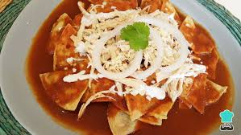
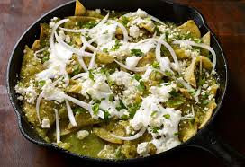

CHILAQUILES
üåø 1. Chilaquiles Verdes Ingredientes (2 porciones): 10 tortillas de ma√≠z (de preferencia del d√≠a anterior) 3 tomates verdes (tomatillos) 1 diente de ajo 1/4 de cebolla 1 chile serrano (ajusta al gusto) 1/4 taza de cilantro fresco 1/2 taza de agua Aceite vegetal Sal al gusto Crema al gusto Queso fresco desmoronado Cebolla en rodajas finas Aguacate (opcional) Preparaci√≥n: Cortar y fre√≠r: Corta las tortillas en tri√°ngulos y fr√≠elas en aceite caliente hasta que est√©n doradas y crujientes. Retira y escurre en papel absorbente. Hacer la salsa: Hierve los tomates, chile, ajo y cebolla durante 10 minutos. Licúa con el cilantro, agua y sal. Cocinar la salsa: En una sart√©n, calienta un poco de aceite y vierte la salsa. Cocina a fuego medio 5 minutos hasta que espese ligeramente. Incorporar totopos: Agrega los totopos (tortillas fritas) a la salsa y mezcla bien. Cocina 1‚Äì2 minutos. Servir: Sirve inmediatamente con crema, queso, cebolla y aguacate si deseas.
üî¥ 2. Chilaquiles Rojos Ingredientes: 10 tortillas de ma√≠z 4 jitomates maduros 2 chiles guajillos (desvenados y remojados) 1 diente de ajo 1/4 de cebolla Aceite vegetal Sal al gusto Crema, queso fresco y cebolla para servir Preparaci√≥n: Totopos: Corta y fr√≠e las tortillas como en la receta anterior. Salsa roja: Hierve los jitomates con el ajo y la cebolla. Licúa con los chiles guajillos ya remojados y sal. Cocinar la salsa: Fr√≠e la salsa en una sart√©n con un poco de aceite. Cocina por 5‚Äì7 minutos. Mezclar: Agrega los totopos a la salsa y mezcla para que se impregnen bien. Servir: Decora con crema, queso y cebolla.
3. Chilaquiles con Pollo Ingredientes: Base de chilaquiles verdes o rojos (elige una de las recetas anteriores) 1 pechuga de pollo cocida y deshebrada Frijoles refritos (opcional) Huevos estrellados o revueltos (opcional) Preparación: Prepara la receta base (verde o roja). Agregar pollo: Al momento de mezclar los totopos con la salsa, añade el pollo deshebrado. Servir: Acompaña con crema, queso, cebolla y, si gustas, huevos o frijoles al lado.
 